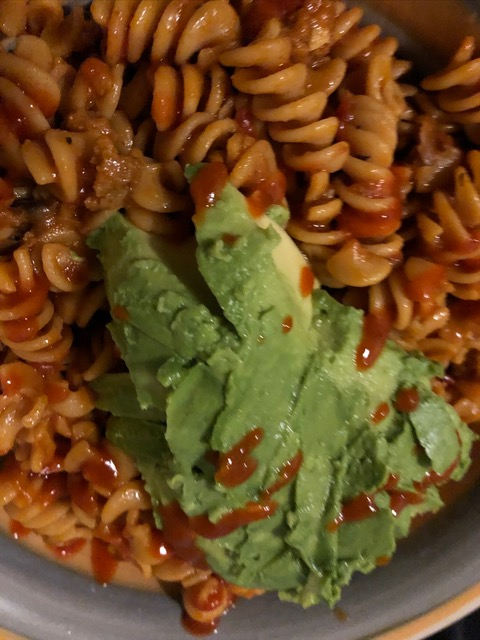

home
Carb Your Life Up

Open up your fridge, dive in and see what left overs you have.
This healthy delicious meal didn’t even take that long to make.
Was full from this but not in a gross I need to sleep to recover after this type of meal.
Perfect for lunch, brunch, dinner even breakfast
Pasta is an all-day every day type of meal.
Ingredients
- Chickpea pasta I used Organic Chickpea Fusilli
- Organic pasta sauce or you can make your own
- Siracha sauce to mix with pasta sauce or drizzle on top
- Avocado always!!!
Instructions
- Bring 6 cups of water to boil with lots of salt
- Once water boils add pasta and let cook, check you package to see how long it takes usually 7-9 mins. If you are cooking the pasta with meat or sauce, I generally would take it out at 7 mins
- Drain & Save pasta water to add into the sauce when it’s time to heat your sauce of choice up
- Break out the sauce and add any extra herb spices and a cup of pasta water.
- Before the sauce gains any real heat add you strained pasta in
- Let cook for a few minutes stirring and watching. Add basil or black pepper if you like
- Place in your favorite bowl add avocado like I did or whatever you like grated cheese, more basil
- Enjoy your food!!! Groove